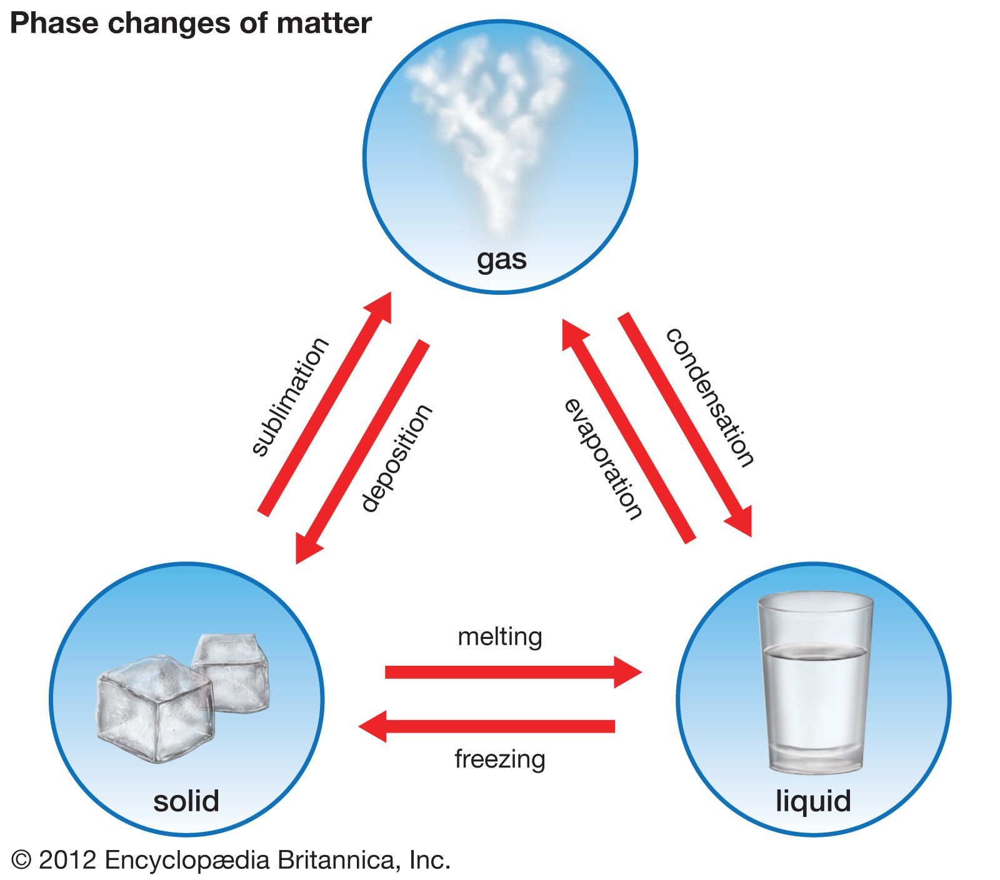
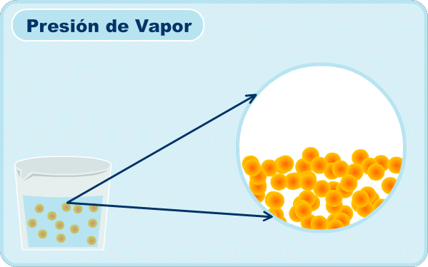
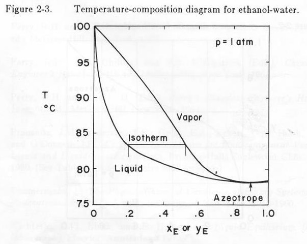

Equilibrio de fases
La piedra angular de la destilación: equilibrio líquido-vapor, ley de Raoult, ecuación de Antoine, diagramas T-x-y / P-x-y / y-x, volatilidad relativa y azeótropos, con gráfica interactiva y calculadoras.
Para diseñar la columna de destilación que recupera el etanol en la planta de pectina, primero hay que responder una pregunta básica: ¿cómo se distribuye cada componente entre el vapor y el líquido cuando las dos fases coexisten en equilibrio? La respuesta está en el equilibrio de fases, y específicamente en el equilibrio líquido-vapor (ELV). Sin comprenderlo, el diseño de cualquier operación de separación por volatilidad queda sin fundamento.

Si su proyecto involucra una separación por destilación, debe:
- Identificar el sistema binario (ej. etanol-agua) y el componente más volátil.
- Obtener datos de ELV: curva y-x, o las constantes de Antoine de cada componente en tablas de termodinámica.
- Calcular la volatilidad relativa α a la presión de operación de la columna.
- Usar esta información como punto de partida para el método de McCabe-Thiele (Lectura 13).
1. Conceptos fundamentales de equilibrio de fases
Definición de fase
Una fase es una porción homogénea de un sistema con propiedades físicas y composición química uniformes, separada de otras porciones por límites definidos (interfases). En la destilación interesan principalmente la fase líquida y la fase gaseosa (vapor).
Definición de equilibrio de fases
Un sistema multifásico está en equilibrio de fases cuando no existe tendencia neta a que las propiedades cambien con el tiempo. A escala molecular el proceso es dinámico, las moléculas continúan cruzando la interfase, pero las tasas de transferencia en direcciones opuestas son iguales, de modo que la composición macroscópica de cada fase permanece constante.
Para que exista equilibrio de fases deben cumplirse tres condiciones simultáneamente:
| Condición | Variable igualada entre fases | Expresión |
|---|---|---|
| Equilibrio térmico | Temperatura | \(T_\alpha = T_\beta = \ldots\) |
| Equilibrio mecánico | Presión (interfases planas) | \(P_\alpha = P_\beta = \ldots\) |
| Equilibrio de potencial químico | Fugacidad de cada componente \(i\) | \(f_{i,\alpha} = f_{i,\beta} = \ldots\) |
La condición de igualación de fugacidades (o de potenciales químicos) es la que genera las ecuaciones de equilibrio que usaremos: leyes de Raoult y Dalton.
Regla de las fases de Gibbs
Antes de construir diagramas, conviene saber cuántas variables intensivas podemos fijar libremente en un sistema en equilibrio. La regla de las fases de Gibbs lo responde:
$$F = C - P + 2$$donde \(F\) son los grados de libertad (número de variables intensivas independientes, temperatura, presión, composiciones, que pueden variarse sin alterar el número de fases), \(C\) es el número de componentes químicos y \(P\) el número de fases en equilibrio. El «\(+2\)» corresponde a la temperatura y la presión.
- Componente puro en ELV (\(C=1\), \(P=2\)): \(F = 1-2+2 = 1\). Solo un grado de libertad: al fijar \(T\) queda determinada \(P_i^{sat}\) (curva de vaporización), y viceversa.
- Mezcla binaria en ELV (\(C=2\), \(P=2\)): \(F = 2-2+2 = 2\). Dos grados de libertad. Por eso los diagramas se construyen fijando una variable: a presión constante se traza el diagrama T-x-y, y a temperatura constante el P-x-y.
- Punto triple de un puro (\(C=1\), \(P=3\)): \(F = 0\). Cero grados de libertad: el punto triple ocurre a una única \(T\) y \(P\).
La regla de las fases justifica que, en una columna que opera a presión fija, basta conocer la composición del líquido para que la temperatura y la composición del vapor en equilibrio queden completamente determinadas. Esa es la base de los diagramas T-x-y y y-x que veremos en la Sección 4.
Diagrama de fases de un componente puro
El diagrama P-T de un componente puro muestra las regiones de estabilidad de cada fase y las curvas de coexistencia que las separan. La curva de vaporización (líquido-vapor) es la más relevante para la destilación: a lo largo de ella coexisten las fases líquida y vapor, y la presión sobre esta curva a temperatura dada es la presión de vapor de saturación, \(P_i^{sat}(T)\).

2. Presión de vapor y ecuación de Antoine
Presión de vapor de saturación
Para un componente puro a una temperatura dada, la presión de vapor de saturación \(P_i^{sat}(T)\) es la presión a la que su vapor coexiste en equilibrio con su fase líquida. Un componente con alta \(P_i^{sat}\) a una temperatura dada es más volátil: tiende a evaporarse más fácilmente y por tanto se enriquece en la fase vapor.

Ecuación de Antoine
La dependencia de \(P_i^{sat}\) con la temperatura sigue una correlación empírica muy utilizada, la ecuación de Antoine:
$$\log_{10}(P_i^{sat}) = A_i - \frac{B_i}{T + C_i}$$donde \(A_i\), \(B_i\) y \(C_i\) son constantes tabuladas para cada sustancia, \(T\) suele estar en °C y \(P_i^{sat}\) en mmHg (aunque existen versiones con Pa o kPa). Las constantes se consultan en Perry's Handbook o el NIST WebBook.
| Componente | A | B | C | T (°C) | P (mmHg) |
|---|---|---|---|---|---|
| Agua (H₂O) | 8,07131 | 1730,63 | 233,426 | 1-100 | mmHg |
| Etanol (C₂H₅OH) | 8,11220 | 1592,864 | 226,184 | -2-100 | mmHg |
| n-Hexano (C₆H₁₄) | 6,87601 | 1171,17 | 224,408 | -25-92 | mmHg |
| n-Octano (C₈H₁₈) | 6,91868 | 1351,99 | 209,155 | 19-152 | mmHg |
Constantes de Antoine para componentes comunes en destilación. Fuente: Perry's Chemical Engineers' Handbook.
Calculadora: ecuación de Antoine
Ajuste los parámetros y la temperatura para obtener la presión de vapor de saturación en mmHg y en kPa.
Presets: H₂O → A=8,071 B=1730,6 C=233,4 · Etanol → A=8,112 B=1592,9 C=226,2
3. Leyes de Raoult y Dalton: ELV binario ideal
Ley de Raoult
Para una mezcla líquida ideal, la presión parcial del componente \(i\) en la fase vapor es:
$$p_i = x_i \cdot P_i^{sat}$$donde \(x_i\) es la fracción molar de \(i\) en el líquido y \(P_i^{sat}\) es su presión de vapor puro a la temperatura del sistema. Una mezcla ideal es aquella donde las interacciones A-B son similares a las A-A y B-B (ej. n-hexano / n-octano).
Ley de Dalton
Para la fase vapor ideal:
$$p_i = y_i \cdot P_T \qquad \Rightarrow \qquad P_T = \sum_i p_i$$donde \(y_i\) es la fracción molar de \(i\) en el vapor y \(P_T\) la presión total.
Relación fundamental del ELV binario ideal
Combinando Raoult y Dalton para una mezcla binaria A-B (A = más volátil, \(P_A^{sat} > P_B^{sat}\)):
$$P_T = x_A P_A^{sat} + x_B P_B^{sat} = x_A P_A^{sat} + (1-x_A) P_B^{sat}$$ $$y_A = \frac{x_A \cdot P_A^{sat}}{P_T} = \frac{x_A \cdot P_A^{sat}}{x_A P_A^{sat} + (1-x_A) P_B^{sat}}$$Como \(P_A^{sat} > P_B^{sat}\), se cumple que \(y_A > x_A\): la fase vapor siempre se enriquece en el componente más volátil. Éste es el principio físico de la destilación.
Volatilidad relativa (\(\alpha_{AB}\))
La facilidad de separación se cuantifica con la volatilidad relativa:
$$\alpha_{AB} = \frac{y_A/x_A}{y_B/x_B}$$Para una mezcla binaria ideal (Raoult), se simplifica a:
$$\alpha_{AB} = \frac{P_A^{sat}}{P_B^{sat}}$$Y la curva de equilibrio queda en función de \(\alpha\) únicamente:
$$y_A = \frac{\alpha_{AB} \cdot x_A}{1 + (\alpha_{AB} - 1)\cdot x_A}$$- Si \(\alpha > 1\): A es más volátil que B y la separación es posible.
- Si \(\alpha = 1\): No hay diferencia de volatilidad: la destilación ordinaria no funciona.
- A mayor \(\alpha\), más fácil es la separación (menos platos teóricos).
A 1 atm y 78,4 °C (punto de ebullición del etanol puro), \(P_{etanol}^{sat} \approx 760\) mmHg y \(P_{agua}^{sat} \approx 330\) mmHg, por lo que la volatilidad relativa ideal (cociente de presiones de vapor) vale \(\alpha \approx 2,3\). Este valor ideal cambia poco con la temperatura (a 100 °C sigue siendo \(\alpha \approx 2,2\)). Sin embargo, el etanol-agua se aleja fuertemente de la idealidad: incluyendo los coeficientes de actividad, la volatilidad relativa real es mucho mayor en la región diluida en etanol (\(\alpha \approx 8\text{-}9\) cuando \(x_{etanol}\) es pequeño) y cae hasta \(\alpha = 1\) en el azeótropo. Por eso la volatilidad relativa no es constante a lo largo de la columna y los primeros platos separan con mucha más facilidad que los últimos.
4. Diagramas de equilibrio líquido-vapor
Los diagramas de ELV son la herramienta visual fundamental para diseñar columnas de destilación. Existen tres representaciones principales, cada una útil para propósitos distintos.
Diagrama T-x-y (temperatura vs. composición)
Se traza a presión constante. Muestra la temperatura de equilibrio en función de la composición de líquido (\(x\)) y vapor (\(y\)). La curva de burbuja delimita el inicio de la vaporización (primera burbuja al calentar un líquido); la curva de rocío delimita el inicio de la condensación (primera gota al enfriar un vapor). Entre ambas curvas existe la región bifásica.
Construcción e interpretación del diagrama T-x-y para una mezcla binaria ideal. Observe cómo una línea de amarre horizontal conecta el líquido de composición \(x\) con el vapor de composición \(y\) en equilibrio.
Punto de burbuja y punto de rocío
Estos dos puntos son la lectura práctica del diagrama T-x-y a una composición global fija:
- Punto de burbuja: al calentar un líquido subenfriado de composición \(z\), es la temperatura a la que aparece la primera burbuja de vapor. Cae sobre la curva de burbuja (la inferior en el T-x-y).
- Punto de rocío: al enfriar un vapor sobrecalentado de composición \(z\), es la temperatura a la que aparece la primera gota de líquido. Cae sobre la curva de rocío (la superior en el T-x-y).
Entre el punto de burbuja y el de rocío el sistema es bifásico: coexisten líquido y vapor. El cálculo de estas temperaturas (cálculos de punto de burbuja y de rocío) es la operación numérica básica para resolver cualquier etapa de equilibrio.
Línea de amarre y regla de la palanca
A una temperatura dentro de la región bifásica, una línea de amarre (tie line) es el segmento horizontal que conecta el líquido en equilibrio (sobre la curva de burbuja, composición \(x\)) con el vapor en equilibrio (sobre la curva de rocío, composición \(y\)). Las dos fases que coexisten siempre quedan en los extremos de una línea de amarre.
Las cantidades relativas de cada fase se obtienen con la regla de la palanca. Si la composición global de la mezcla es \(z\), y las fases en equilibrio tienen composiciones \(x\) (líquido) e \(y\) (vapor), las moles de líquido \(L\) y de vapor \(V\) cumplen:
$$\frac{V}{L} = \frac{z - x}{y - z} \qquad\Longleftrightarrow\qquad \frac{L}{F} = \frac{y - z}{y - x},\quad \frac{V}{F} = \frac{z - x}{y - x}$$donde \(F = L + V\) es el total de la mezcla. En palabras: cuanto más cerca esté la composición global \(z\) de la curva de rocío, mayor es la fracción de líquido; cuanto más cerca de la curva de burbuja, mayor es la fracción de vapor. La fase que está «más lejos» en la palanca es la menos abundante.
Diagrama P-x-y (presión vs. composición)
Se traza a temperatura constante. Es el «espejo» del T-x-y: a mayor presión se favorece la fase líquida. La curva de burbuja indica la presión a la que aparece la primera burbuja al reducir la presión sobre un líquido; la curva de rocío indica la presión a la que aparece la primera gota al comprimir un vapor.
Diagrama P-x-y: la curva superior es la de burbuja y la inferior la de rocío. Las columnas de destilación industriales operan habitualmente a presión constante, por lo que el diagrama T-x-y es más común en diseño.
Diagrama y-x (diagrama de equilibrio)
Grafica directamente la fracción molar del componente más volátil en el vapor (\(y\)) versus su fracción en el líquido (\(x\)) en equilibrio, a presión constante. La diagonal \(y = x\) es la referencia; la curva de equilibrio siempre está por encima de la diagonal para el componente más volátil. La distancia entre la curva y la diagonal es una medida del enriquecimiento en cada etapa. Este diagrama es la base del método gráfico de McCabe-Thiele (Lectura 13).
El diagrama y-x es la herramienta central del diseño gráfico de columnas de destilación. Se traza la curva de equilibrio, la diagonal y = x, y luego las líneas de operación para contar los platos teóricos.
Explorador: curva de equilibrio y-x
Ajuste la volatilidad relativa α para ver cómo cambia la curva de equilibrio. Cuando la curva se aleja de la diagonal, la separación es más fácil.
La curva usa: \(y = \alpha x / [1 + (\alpha-1)x]\) (mezcla ideal). Para mezclas no ideales la forma de la curva puede ser muy diferente: ver Sección 5.
5. Desviaciones de la idealidad y azeótropos
No todas las mezclas se comportan de acuerdo con la ley de Raoult. Las diferencias en las interacciones moleculares entre los componentes generan desviaciones de la idealidad que modifican las curvas de equilibrio y pueden llevar a la formación de azeótropos.
Coeficiente de actividad (\(\gamma_i\))
La desviación de la idealidad en la fase líquida se modela con el coeficiente de actividad \(\gamma_i\), que modifica la ley de Raoult:
$$p_i = x_i \cdot \gamma_i \cdot P_i^{sat} \qquad \text{(Ley de Raoult modificada)}$$- \(\gamma_i = 1\): comportamiento ideal (Ley de Raoult original).
- \(\gamma_i > 1\): desviación positiva: mayor presión parcial que la ideal; moléculas de tipos distintos se «repelen» y tienden más a evaporarse.
- \(\gamma_i < 1\): desviación negativa: menor presión parcial que la ideal; fuertes interacciones entre distintos componentes retienen las moléculas en el líquido.
Los coeficientes de actividad se estiman con modelos termodinámicos: Wilson, NRTL, UNIQUAC, o de predicción grupal como UNIFAC.
Azeótropos
Un azeótropo es una mezcla cuya composición no cambia al destilarla: la composición del vapor es idéntica a la del líquido en el punto azeotrópico (\(y_i = x_i\), \(\alpha = 1\)). No puede separarse más allá de esa composición por destilación ordinaria.
| Tipo | Temperatura de ebullición | Desviación de Raoult | Diagrama T-x-y | Ejemplo |
|---|---|---|---|---|
| Mínima ebullición (máx. presión) | Menor que ambos componentes puros | Positiva (\(\gamma > 1\)) | Mínimo en curvas de burbuja/rocío | Etanol-agua (95,6 % p/p etanol, 78,1 °C a 1 atm) |
| Máxima ebullición (mín. presión) | Mayor que ambos componentes puros | Negativa (\(\gamma < 1\)) | Máximo en curvas de burbuja/rocío | HNO₃-agua (68,0 % p/p HNO₃, 120,7 °C a 1 atm) |


Si el sistema binario de su proyecto forma un azeótropo (como etanol-agua), la destilación ordinaria solo puede llegar hasta la composición azeotrópica. Para superar ese límite se requieren técnicas especiales: destilación azeotrópica (con un tercer componente), destilación extractiva, presión-swing o membranas de pervaporación. En el proyecto del curso, producir etanol anhidro (>99 %) requiere reconocer y manejar el azeótropo.
Lectura de referencia
Capítulo de texto base sobre destilación, que incluye equilibrio de fases y fundamentos termodinámicos.
6. Bibliografía
- Smith, J. M., Van Ness, H. C., & Abbott, M. M. (2005). Introduction to Chemical Engineering Thermodynamics (7.ª ed.). McGraw-Hill. (Caps. 10-13: equilibrio de fases y ELV).
- McCabe, W. L., Smith, J. C., & Harriott, P. (2005). Unit Operations of Chemical Engineering (7.ª ed.). McGraw-Hill. (Cap. 18: Equilibrium Separations).
- Perry, R. H., & Green, D. W. (Eds.) (2019). Perry's Chemical Engineers' Handbook (9.ª ed.). McGraw-Hill. (Sección 4: Thermodynamics; Sección 13: Distillation).
- NIST Chemistry WebBook. Constantes de Antoine para componentes seleccionados. webbook.nist.gov.
- Seader, J. D., Henley, E. J., & Roper, D. K. (2011). Separation Process Principles (3.ª ed.). Wiley. (Cap. 2: Thermodynamics of Separation).